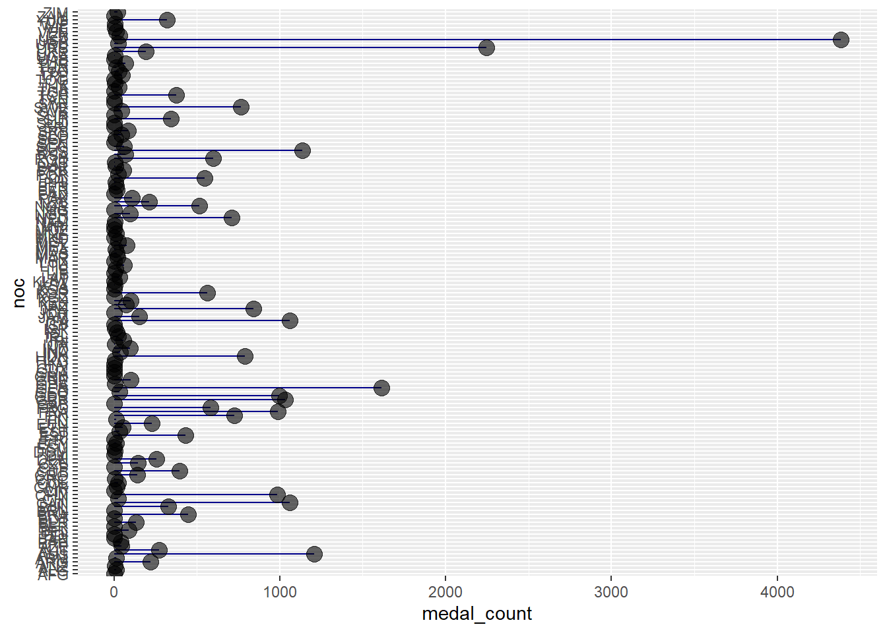
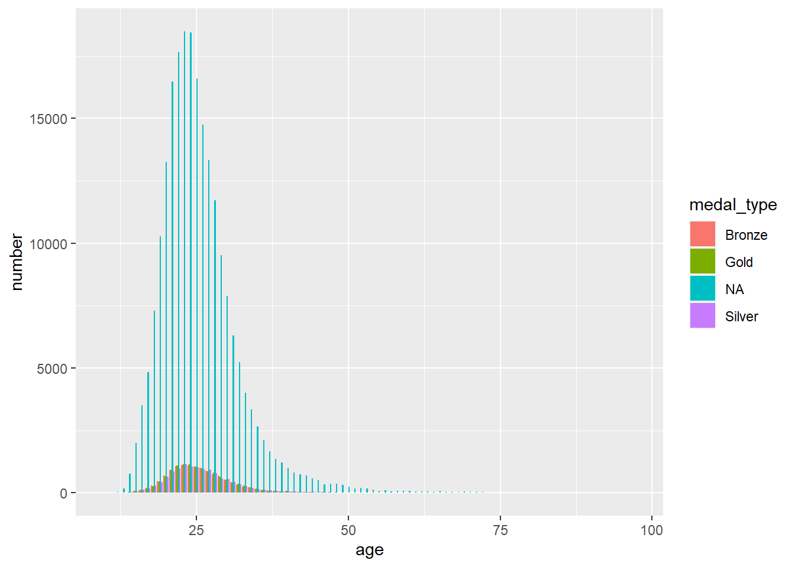
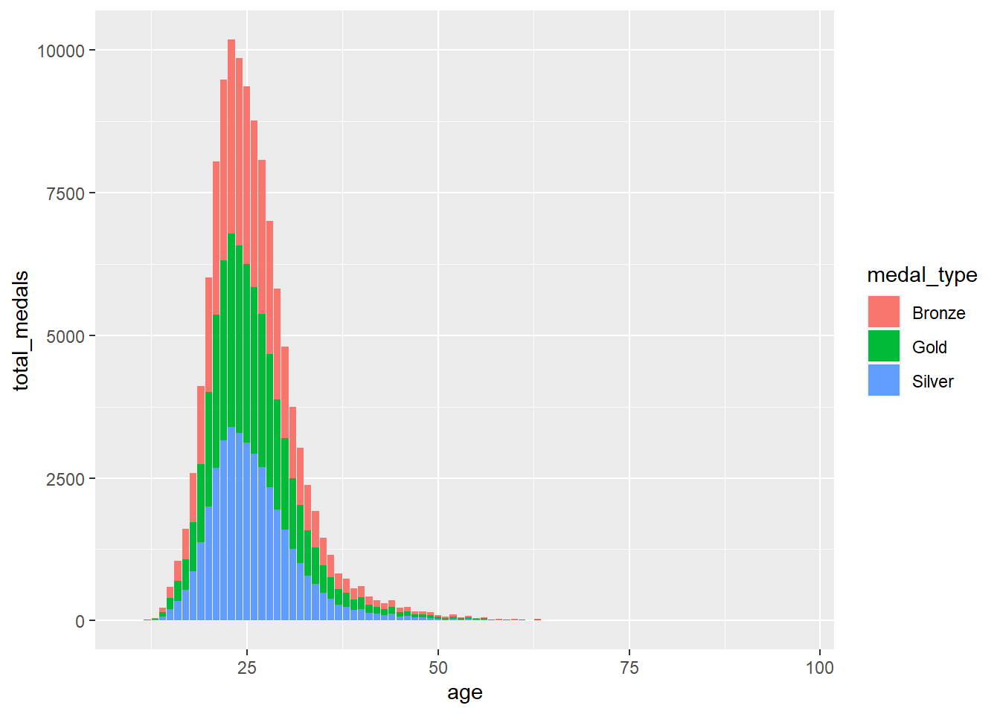
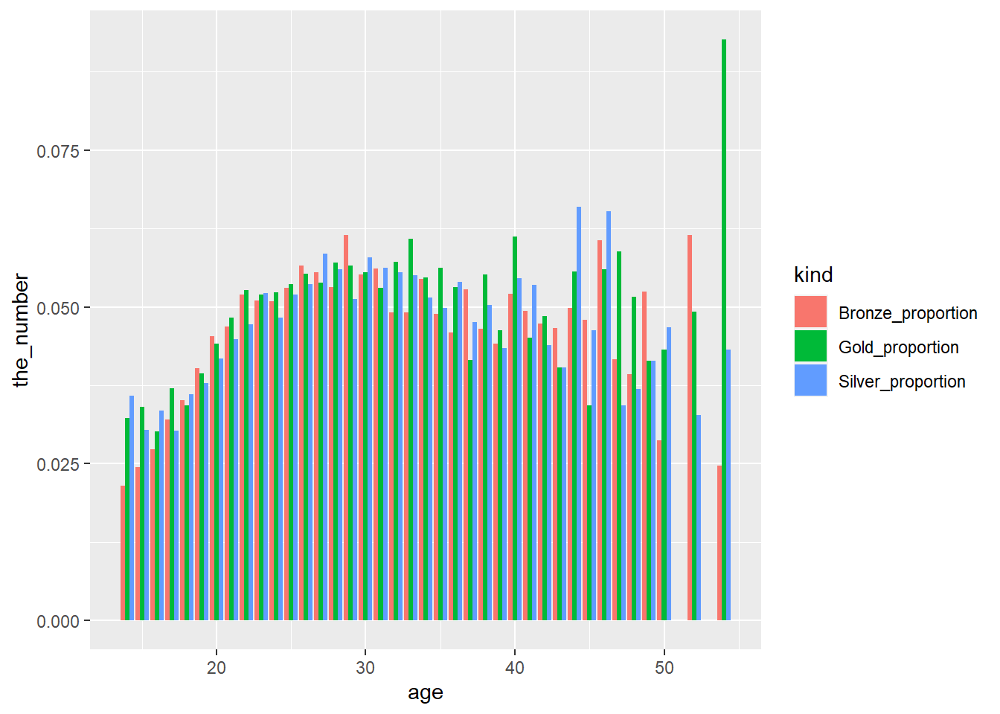

#country analysis#remove entries where medal column is nullolympic <-na.omit(olympic)#test2 now is each countries medals by typeworking <- olympic %>%group_by(noc) %>%count(medal) #pivot wider so we can make it into a lollipop graphmedal_analysis <- working %>%pivot_wider(names_from = medal, values_from = n)#makes all values 0 where it was na so we can sum the medal countsmedal_analysis[is.na(medal_analysis)] <-0#heres where we sum the medal counts and boom there we have our plottable datamedal_analysis$medal_count <- medal_analysis$Bronze + medal_analysis$Silver + medal_analysis$Gold#plots it, although its completely unreadable at this point in time...ggplot(medal_analysis, aes(x = noc, y = medal_count))+geom_segment( aes( x=noc, xend=noc, y=0, yend=medal_count), color ="darkblue")+geom_point(color="black", size=4, alpha=0.6)+coord_flip()

#age analysisolympic <-read.csv("https://raw.githubusercontent.com/rfordatascience/tidytuesday/master/data/2021/2021-07-27/olympics.csv")#If doing this without null medal data, need to account for 0s in the data making the graphs look funky, also readable with the NAs in the stacked bar graph.age_analysis <- olympic %>%group_by(age) %>%count(medal)#pivot the table to total up medal totalsage_analysis <- age_analysis %>%pivot_wider(names_from = medal, values_from = n)age_analysis[is.na(age_analysis)] <-0age_analysis <- age_analysis[age_analysis$age !=0, ]age_analysis$total_medals <- age_analysis$Bronze + age_analysis$Gold + age_analysis$Silver#could also graph just total number of medals#stacked bar graph would be sweet#also grouped bar graph#gives opportunity to show colorage_long <- age_analysis %>%pivot_longer(-c(age, total_medals), names_to ="medal_type", values_to ="number")#age_long <- age_long %>% filter(total_medals > 25)ggplot(age_long, aes(fill=medal_type, x=age, y=number))+geom_bar(position ="dodge", stat="identity")

#color here as well would be helpful#stacked bar graph showing distribution of medals from each age#but we would need to remove the NA values for this graphage_long <- age_long %>%filter(medal_type !="NA")ggplot(age_long, aes(fill = medal_type, x=age, y=total_medals))+geom_bar(position ="stack", stat ="identity")

#add color to match each medal type hehe#but this graph is hard to read... so do below graph to understand proportions and whos winning it all the mostmedal_proportions <- age_analysismedal_proportions <- medal_proportions %>%filter(total_medals >25)medal_proportions$participant_count <- medal_proportions$total_medals + medal_proportions$`NA`medal_proportions$Bronze_proportion <- medal_proportions$Bronze/medal_proportions$participant_countmedal_proportions$Silver_proportion <- medal_proportions$Silver/medal_proportions$participant_countmedal_proportions$Gold_proportion <- medal_proportions$Gold/medal_proportions$participant_countmedal_proportions$top3_proportion <- medal_proportions$total_medals/medal_proportions$participant_count#now we can graph different facets of the age data#we can graph each ages proportion of gold medals#with this it would be good to have only more than 25 participants#gonna need to pivot the graph to long form to graph the each medal_long <- medal_proportions %>%pivot_longer(-c(age, Bronze, Silver, Gold, `NA`, total_medals, participant_count, top3_proportion), names_to ="kind", values_to ="the_number")ggplot(medal_long, aes(fill = kind, x=age, y=the_number))+geom_bar(position="dodge", stat="identity")

#gender analysis#can find "optimal physical traits" for each gender given different sports and builds, separating by type of sport below#also maybe differentiate between track and field events for string manipulation#ie search the event name for words like meter, sprint, dash, kilometers, walk, marathon, relay#search for swimming, maybe diving#cycling#team sports, football, basketball, hockey#check individual countries and gender performance, ie graph each countries medals for men and women side by side for comparison#countries participation by year, like when were women from different countries first winning medals?